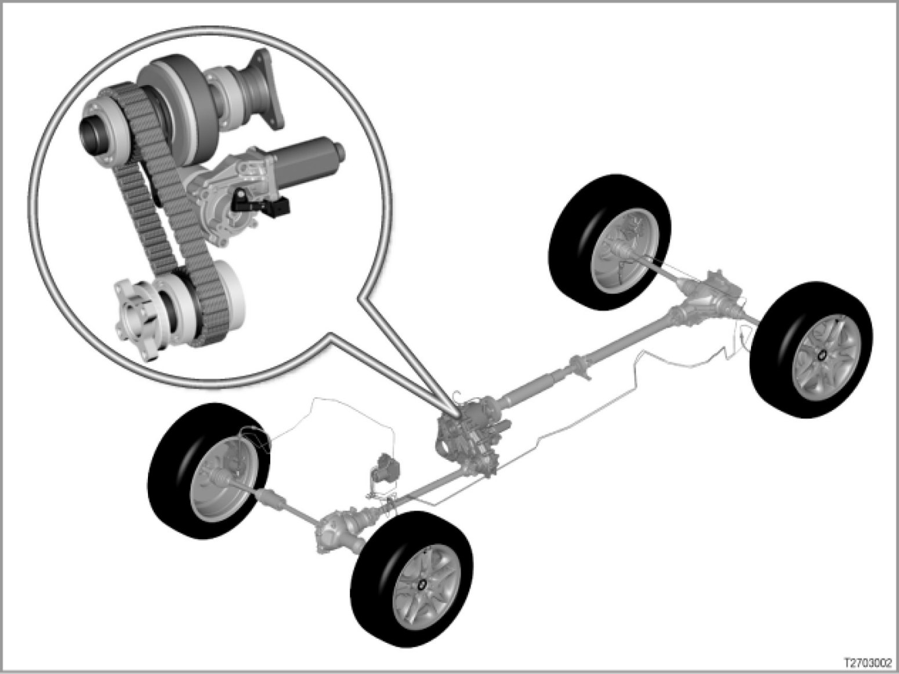

xDrive
27 01 03 (048)
xDrive
E53, E70, E83

Introduction
xDrive is an all-wheel drive system that links Dynamic Stability Control (DSC) system to an electronically controlled multi-plate clutch in the transfer box.
The electronically controlled multi-plate clutch smoothly distributes the drive torque as required to the front axle. The rear axle is always powered.
All of the drive torque is applied to the rear axle when the multi-plate clutch is separated.
> - E53, E83 [system overview ...]
> - E70 [system overview ...]
xDrive constantly communicates with the DSC. The drive-dynamic input information is computed in the DSC control unit.
Important information is:
- Accelerator pedal position
- Engine torque
- Drive-dynamic state
The DSC calculates the necessary locking torque. The locking torque is communicated to xDrive. This allows xDrive to register whether the vehicle is able to follow the driver's commands. xDrive intervenes to counter the threat of any tendency for wheel spin, oversteer or understeer. xDrive regulates drive torque distribution between the two axles to meet driving demands.
Only if xDrive cannot maintain the vehicle's course on its own will DSC also intervene. Engine output is reduced and individual wheels are specifically braked.
The drive torque is delivered to the axle that has better traction when road conditions change, such as on snow, ice or a loose road surface.
The transfer cases are matched to vehicles as follows:
- E53: ATC 500 transfer case
(ATC = Active Torque Control)
- E70: ATC 700 transfer case
- E83: ATC 400 transfer case
The transfer cases differ in the following points:
- Different number of plates in the multi-plate clutches
- Different clearance between the input and output shafts to the front axle
- Propeller shaft inserted into the front axle differential on the E53, E70, and flange-mounted on the E83
The transfer case is designed to be stronger on the E53, E70 in order to match the higher engine torques.
The advantages:
xDrive delivers the following advantages through demand-oriented drive torque distribution:
- Outstanding driving stability fully up to the limit range
- Optimal forward momentum
- Excellent traction in all road situations
xDrive is standard equipment on the E70, E83 and on the E53 from October 2003 with the new model version.
Brief description of components
xDrive consists of the following components:
- Transfer case with multi-plate clutch
The electronically controlled multi-plate clutch is housed in the transfer case. The multi-plate clutch distributes the drive torque smoothly and as required between the front and rear axles.
- VTG actuator motor with incremental sensor and classification resistor
The VTG actuator motor (VTG: transfer case) opens and closes the multi-plate clutch. The location of the actuator motor shaft and the adjustment rate are detected by the incremental sensor.
The classification resistor ensures that mechanical tolerances in the transfer case are considered. Optimum function is thus ensured.
- Actuator lever
The actuator lever converts the rotational motion of the VTG actuator motor into an axial motion.
- VTG control unit
The VTG control unit regulates the locking torque at the multi-plate clutch in the transfer case in response to the following factors:
- Demand for required locking torque (comes from the DSC control unit)
- Condition of the transmission oil (calculated in the VTG control unit)
- Multi-plate clutch wear (calculated in the VTG control unit)
- Load on VTG actuator motor (calculated in the VTG control unit)
- Transmission oil temperature (calculated in the VTG control unit)
The VTG control unit supplies the following information to the DSC control unit:
- The locking torque currently set
- All calculated data
The locking torque is limited whenever needed in order to reduce the frictional work.
> E53, E83
> E70
- DSC: Dynamic Stability Control
With xDrive, DSC includes the following functions:
- All-wheel control
- Automatic Differential Brake (ADB-X)
- Hill Descent Control (HDC)
All-wheel control
Dynamic Stability Control (DSC) specifies the nominal value for xDrive all-wheel control. The nominal value depends on the vehicle's tendency to oversteer or understeer and wheel slip. The nominal value is transmitted to the VTG control unit.
Automatic differential brake
The automatic differential brake (ADB-X) simulates the function of conventional limited-slip differentials by selectively applying brakes on individual wheels (known from the E53 and the E46 All-wheel drive).
Whenever a wheel displays a tendency to spin the ADB-X automatically brakes it down to a preset slip. This effect of this is to increase the drive torque on those wheels that have a higher friction coefficient on a lining.
-
-
Hill Descent Control
Hill Decent Control (HDC) is a cruise control on four-wheel drive cars for driving downhill (known from the E53 and the E46 All-wheel drive).
HDC can be activated and deactivated with a separate button.
When the HDC button is pressed, HDC automatically reduces road speed. The brakes are applied on all four wheels to reduce road speed to just above walking pace. HDC holds this speed constant (all DSC functions remain active).
The car's road speed can be freely varied within fixed values by pressing down on the accelerator pedal, brake pedal or the buttons for the cruise-control system.
The following control units and switches are incorporated in xDrive functions:
- DME or DDE: Digital engine electronics or digital diesel electronics
The DME or DDE modifies the engine response as required by the DSC control unit (such as power reduction to prevent the driven wheels from spinning).
- Instrument cluster display
System states are displayed as follows:
- DSC/xDrive telltale and warning lights light up:
DSC/xDrive not activated
- DSC/xDrive telltale and warning lights light up and acoustic signal:
DSC defective, ABS not affected, VTG control unit OK
or
DSC OK, VTG control unit defective
-> All-wheel drive in emergency mode
- DSC/xDrive telltale and warning lights, ABS telltale and warning lights and general brake warning lamp light up and acoustic signal:
Total failure of the DSC and/or malfunction of the VTG control unit
-> All-wheel drive in emergency mode
> E53, E83
The instrument cluster is the data interface (= gateway) between the K-bus and the PT-CAN.
- JBE: Junction box electronics
> E70
The JBE is the data interface (= gateway) between the K-CAN and PT-CAN.
The junction box comprises the JBE and the power distributor.
System functions
xDrive comprises the following functions:
- Control of the locking torque for the multi-plate clutch
- Emergency operation
Control of the locking torque for the multi-plate clutch
The locking torque for the multi-plate clutch in the transfer case can be regulated. This means that the front axle can be smoothly coupled to the drive train. The drive torque at the front axle can be increased or reduced in response to the road situation and conditions.
The DSC control unit calculates the locking torque for the multi-plate clutch as follows:
- Pre-activation = driver's command
- Driving dynamic control
- Detection of different tire rolling circumferences
Pre-activation
The pre-activation circuit reflects the driver's wishes. In other words. the pre-activation circuit is used to calculate the necessary locking torque.
The evaluation criteria below are taken into account to in determining the driver's command:
- Accelerator-pedal value
- Engine torque
- Engine speed
- Vehicle road speed
- Gear engaged
- Steering angle
Driving dynamic control
Driving dynamic control monitors the slip on the front and rear axles. Driving dynamic control has the task of achieving optimum traction and keeping the car stable or to stabilize it.
The following evaluation criteria are taken into account by the monitoring system:
- Wheel speeds
- Yaw rate
- Lateral acceleration
- Steering angle
The drive torque is distributed as follows in normal driving with all-wheel drive:
- 40% to the front axle
- 60% to the rear axle
Distribution of the drive torque is oriented upon the torque that can be supported by each axle. For instance, if the car is fully accelerated in 1st gear from a standing start the distribution of the dynamic axle-load creates a higher axle load on the rear axle. Therefore, the rear axle can convey a higher drive torque.
Example: The front wheels are on a high-traction surface. The rear wheels are on, e.g. sheet ice (low traction). In this case, almost 100% of the available drive torque would be transmitted to the front axle. The rear axle is under hardly any load any can support only a low drive torque.
When driving in a curve, the lateral acceleration causes centrifugal force that forces the car to the outside. The car leaves the stable driving condition when the centrifugal force is stronger than the maximum possible wheel lateral guiding forces. "Understeer" is the phrase used when the car presses outwards over the front wheels. Oversteer, on the other hand, is when the rear wheel adhesion becomes lower. The rear of the car presses outwards.
xDrive minimizes the tendency to understeer or oversteer by optimally distributing the driving power between the rear axle and front axle.
Detection of different tire rolling circumferences
If the tire rolling circumferences are not the same the drive train twists due to different rotary speeds (when the multi-plate clutch is closed).
Differences in rotational speed can occur as a result of the following influences:
- When tires of different makes and types are fitted:
The tire rolling circumference may fluctuate by up to 1% due to tires of different makes and types being fitted or the tires are worn very differently.
- When an emergency wheel is fitted
- When the tires are worn very differently
Slip in the multi-plate clutch may compensate for differences in rotary speed when different tire rolling circumferences are detected.
Compensation is produced by reducing the locking torque in situations that do not have great driving dynamic control.
Emergency operation
Driving dynamic control and the ADB-X function are not possible in emergency operation.
The VTG control unit has an integral regulator for emergency control. The regulator provides redundancy for controlling the multi-plate clutch in the DSC control units.
The regulator is used to attempt to maintain all-wheel drive for as long as possible when the DSC control unit malfunctions or important sensor signals drop out.
Substitute values are calculated when individual sensor signals drop out. Functions are operated by using the substitute values until it is no longer possible to control the all-wheel drive effectively. This can lead to the complete loss of all-wheel drive.
Notes for service staff
Service staff should note the following points:
- General information:
- Diagnosis: ---
- Encoding/programming: ---
Subject to change.